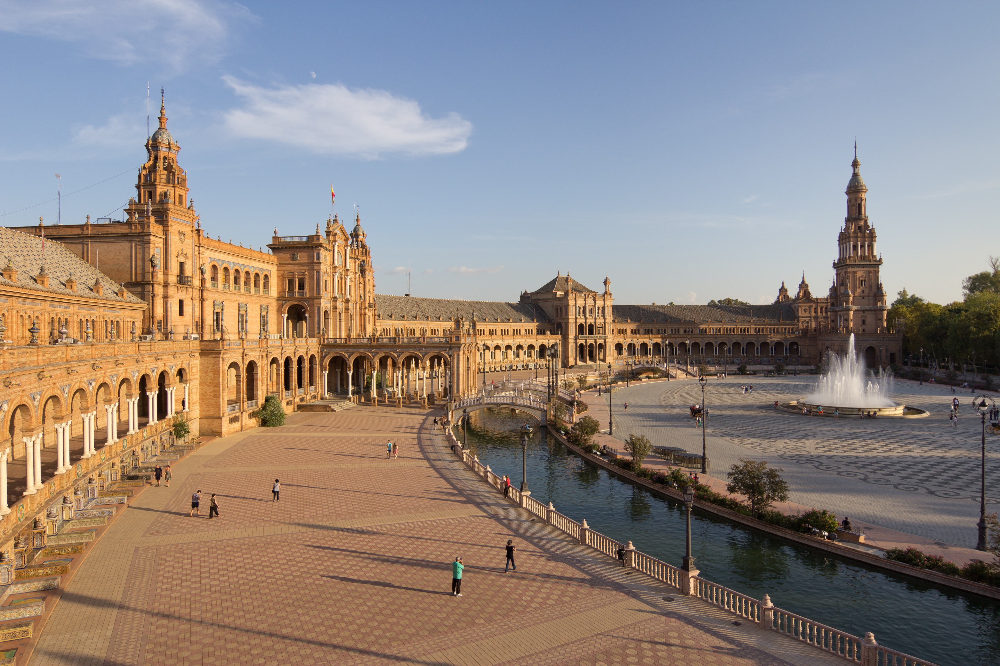

La Plaza de España es un conjunto arquitectónico diseñado por Aníbal González para la Exposición Iberoamericana de 1929. De estilo regionalista, combina el renacimiento, el barroco y el art déco. Su planta semielíptica simboliza el abrazo de España a sus antiguas colonias, y está recorrida por un canal navegable y 48 bancos azulejados, cada uno dedicado a una provincia española.